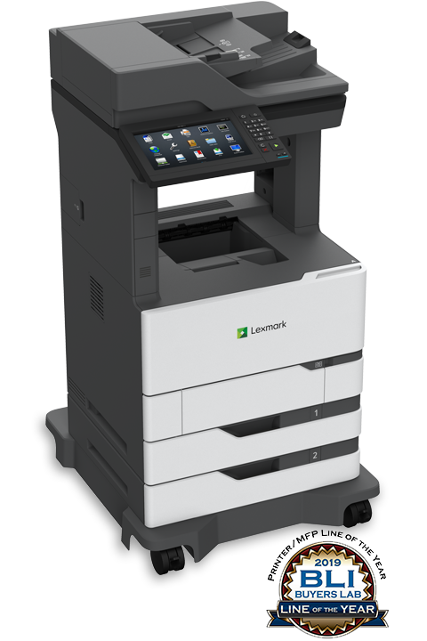
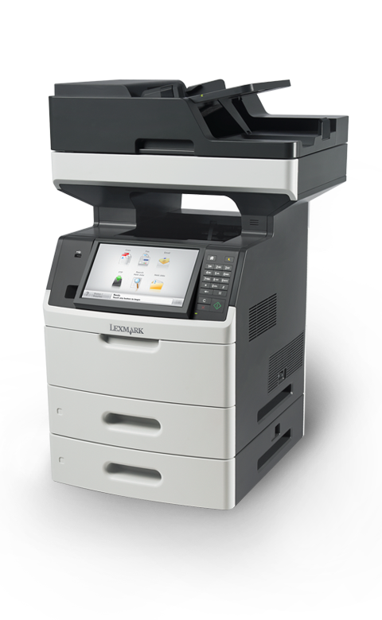
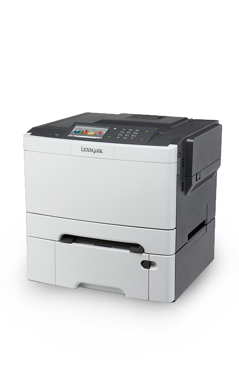

MX721adhe
Con acceso a una capacidad de entrada de hasta 3300 hojas, cartuchos de tóner de reposición para hasta 35 000 páginas**, alimentador automático de documentos (ADF) de 200 hojas, una unidad de imagen y un fusor de larga duración que posiblemente nunca necesiten reemplazo, dedicará más tiempo a imprimir y menos al mantenimiento.
MX710
Disfrute de velocidades de impresión de hasta 63 (60 A4) páginas por minuto, imprima la primera página en tan solo 4,4 segundos y digitalice de forma rápida un documento de dos caras en una sola pasada.
CS510
La impresora láser color Lexmark CS510de, apta para soluciones y con conexión en red integrada, impresión a dos caras estándar, procesador dual core de 800 MHz y 512 MB de memoria estándar imprime a una velocidad de hasta 32 (30 A4) ppm en negro y a color.